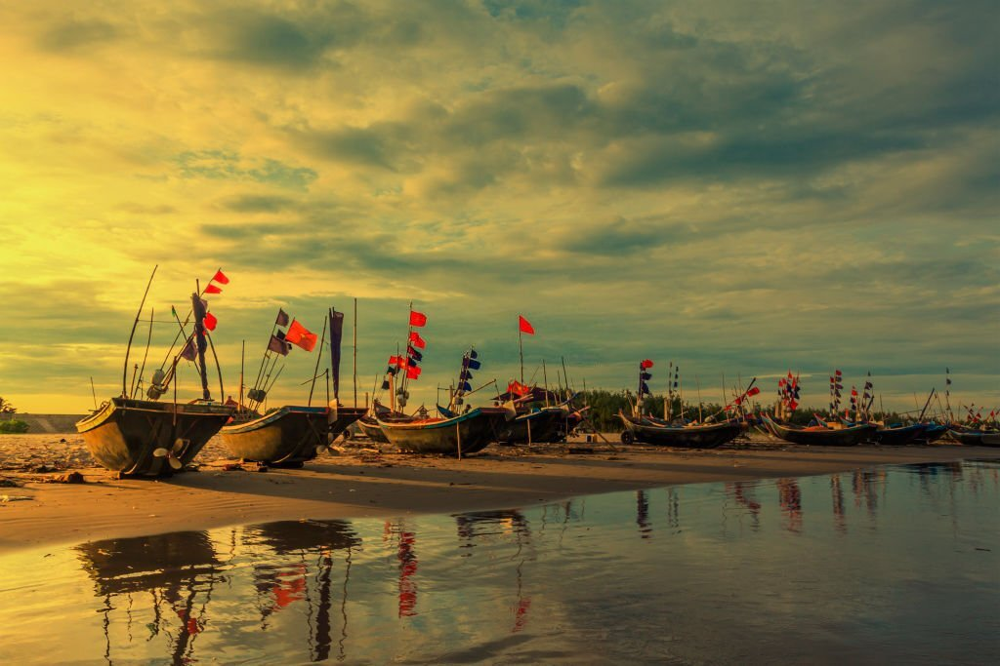
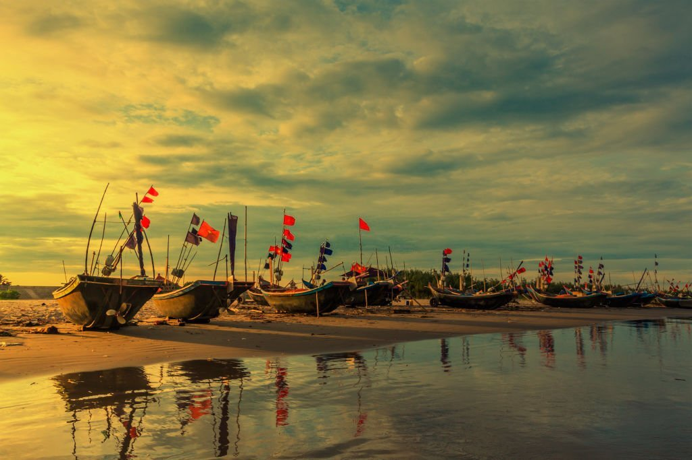
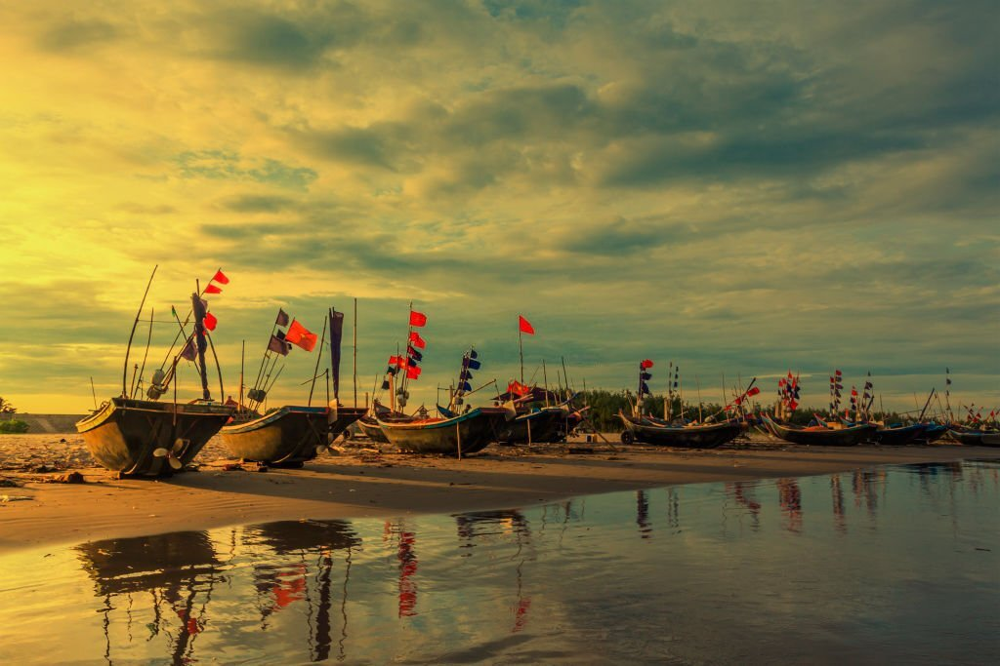
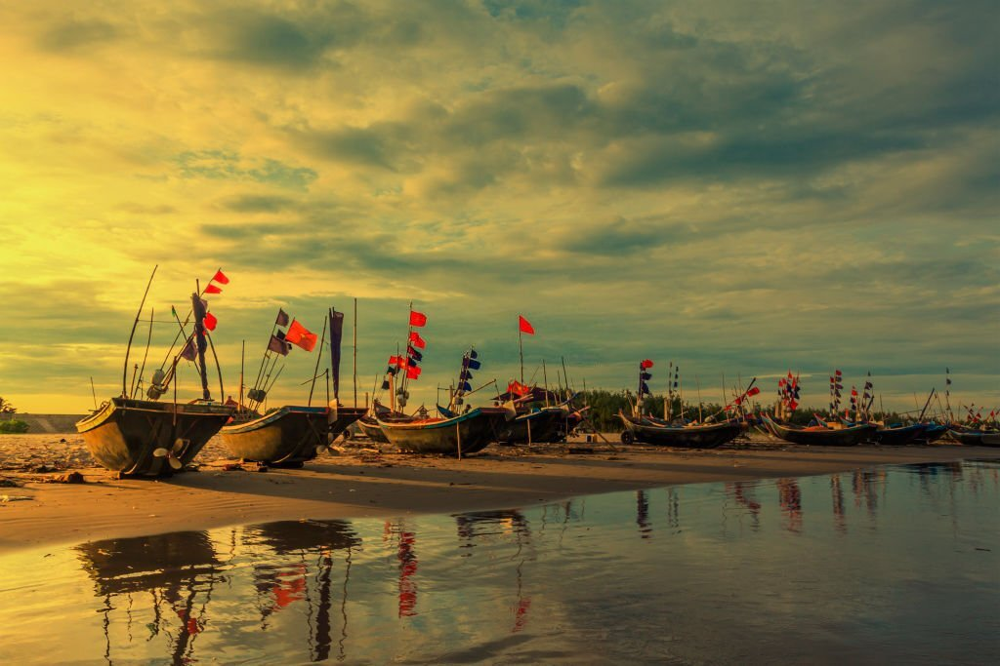

Đây có lẽ là một trong những điểm du lịch là di tích lịch sử mà bất kỳ du khách nào khi đến Nam Định đều muốn ghé qua.
Đền Trần được xây dựng vào năm 1695 trên nền Thái miếu cũ – tức là Phủ Thiên Trường xưa, nơi được coi là phát tích của vương triều nhà Trần và có dấu ấn của cuộc kháng chiến ba lần chống quân Mông – Nguyên của nhân dân ta. Hiện nay, đền nằm ẩn mình trên đường Trần Thừa, phường Lộc Vượng, thành phố Nam Định.
Đền là nơi thờ tự 14 vị vua nhà Trần cùng với gia quyến và các quan lại đã có công phù tá nhà Trần như Trần Thủ Độ, Trần Quốc Tuấn…
Nổi bật của đền Trần là được cấu trúc bởi ba công trình kiến trúc: đền Thiên Trường (đền Thượng), đền Cổ Trạch (đền Hạ) và đền Trùng Hoa có kiểu dáng chung và quy mô ngang nhau. Mỗi đền gồm tòa tiền đường 5 gian, tòa trung đường 5 gian và tòa chính tẩm 3 gian. Nối tiền đường và trung đường là kinh đàn (thiêu hương) và 2 gian tả hữu vu..
Kiến trúc của đền Trần được bài trí dường như không có gì khác biệt so với những ngôi đền hay ngôi chùa mang dáng dấp của làng quê Bắc Bộ Việt Nam. Nhưng mỗi khi đến đây, du khách sẽ không thể nào quên được lễ hội nổi bật bao đời của đền Trần diễn ra vào ngày 15 tháng Giêng hằng năm. Lễ hội được mở đầu bằng Lễ khai ấn từ giờ Tý.
Vì thế mỗi khi du khách đến hành lễ tại đền Trần vào dịp đầu xuân đều xin hoặc mua “ấn” với mong muốn là sẽ được thăng tiến, thành đạt trong công việc và sự nghiệp.
Email: dangdoanhuy9x@gmail.com
Số điện thoại: 0949219284
176 Lương Thế Vinh, Thanh Xuân Bắc, Hà Đông, Hà Nội